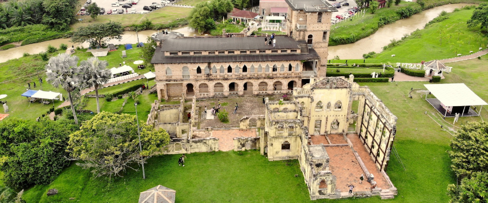

Kellie’s Castle: The Unfinished Legacy of a Scottish Planter
Kellie’s Castle, located near Batu Gajah in Perak, is an unfinished mansion built by a Scottish planter, William Kellie Smith, in the early 1900s. With its mysterious history and unique mix of Moorish, Indian, and Western architecture, the castle is surrounded by legends and ghost stories. Today, it stands as a popular historical attraction with a romantic yet eerie charm.
Kellie’s Castle, located near Batu Gajah in Perak, Malaysia, is a fascinating structure with a mysterious and romantic past. Built by Scottish planter William Kellie Smith in the early 20th century, the castle was meant to be a symbol of love and prosperity. Intended as a gift for his beloved wife and a luxurious home for his family, the castle’s construction was halted after Smith’s untimely death, leaving the grand vision forever unfinished.

The architecture of Kellie’s Castle reflects a mix of Scottish, Moorish, and Indian influences, which was quite rare for that time in Malaya. Its grand arches, hidden stairways, and imported bricks and tiles from India show the ambition behind its construction. One of its most notable planned features was the first elevator in Malaysia, a symbol of modern luxury at the time.​

Visitors today are drawn not only by its architectural beauty but also by the sense of mystery that surrounds it. Legends speak of hidden tunnels, secret rooms, and even ghostly sightings of William Kellie Smith himself. The castle’s eerie yet majestic atmosphere makes it a popular site for both history buffs and curious travelers.
Now a historical attraction, Kellie’s Castle stands as a captivating monument to a dream that was never fully realized. It offers a unique glimpse into colonial history, personal ambition, and architectural marvel, all nestled in the scenic landscape of Perak.